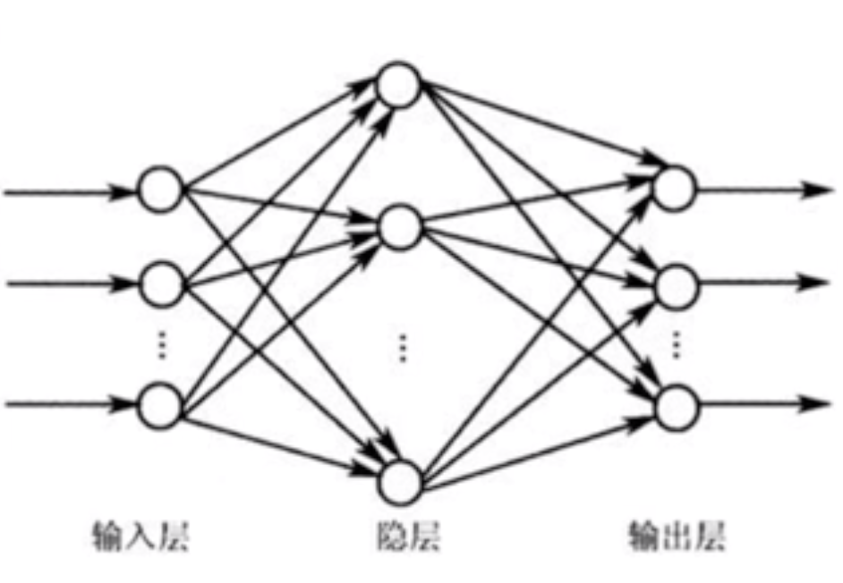
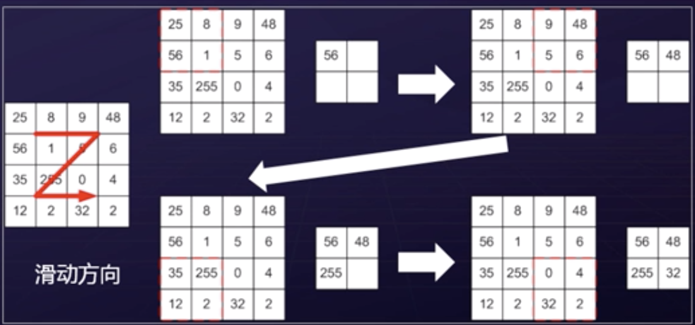
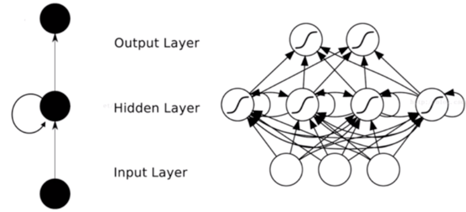
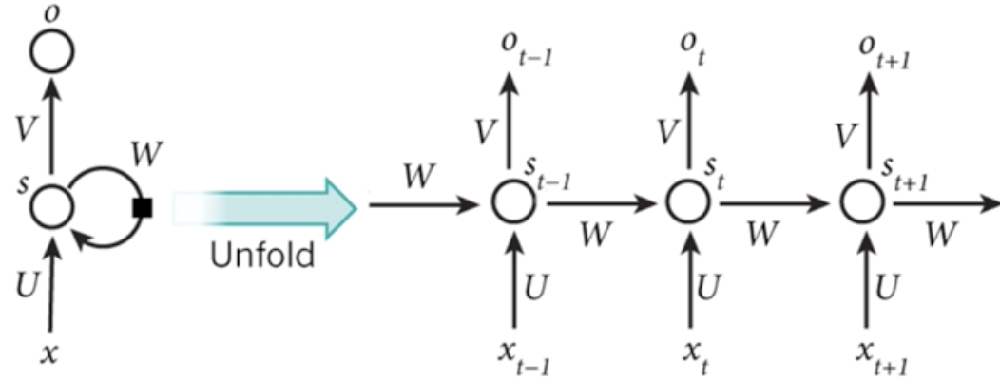
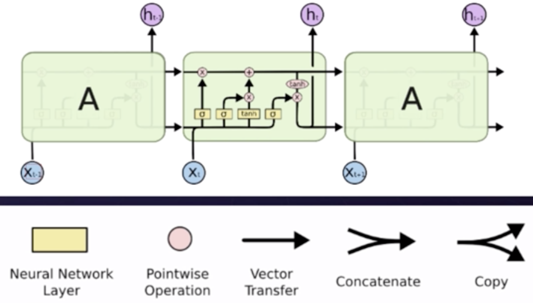

神经网络的种类
全链接人工神经网络
单个感知器的表达能力有限,它只能表达线性决策面（超平面）。如果我们把众多的感知器互联起来，就像人的大脑做所的那样，再将激活函数更换为非线性函数，我们就可以表达种类繁多的非线性曲面。
前馈神经网络
前馈神经网络是一种最简单的神经网络，各神经元分层排列。是目前应用最广泛、发展最迅速的人工神经网络之一。单向多层结构。

反向传播算法
前馈方向做的工作就是将输入值在每一个神经元上通过激活函数进行计算，计算之后再通过全链接的方式传递到下一层。
相对的，反向传播的思路是：正向计算之后，计算每一轮相应的损失函数，再将这个损失值通过反向的方式传递回来。在传递的过程中通过求取相应的梯度，修改之前的权重。反向传播算法所做的工作：第一就是把相应的激励值进行反馈，第二就是对原先的权重值进行相应的修正。
这样正向反向不断的计算迭代，最终将模型最优化。
卷积神经网络
卷积神经网络（Convolutional Neural Network，CNN）是一种前馈神经网络。它的人工神经元可以相应一部分覆盖范围内的周围单元，对于图像处理有出色表现。它包括卷积层（convolutional layer），池化层（pooling layer）和链接层（fully-connected layer）。
20世纪60年代， Hubel和 Wiesel在研究猫脑皮层中用于局部敏感和方向选择的神经元时发现其独特的网络结构可以有效地降低反馈神经网络的复杂性，继而提出了卷积神经网络( Convolutional Neural Networks，CNN)。现在神经网络的研究热点之一，特别在于模式分类领域，可以直接输入原始图像，所以得到了更加广泛的应用。
卷积层：卷积神经网络的基本结构就是多通道卷积。上一层的输出作为本层的输入，再与本层的卷积核卷积作为本层的输出。而更层的卷积核就是要学习的权重。和全联接网络类似，卷积完成后输入到下一层之前也需要经过偏置和通过激活函数。简单来说，卷积层在卷积神经网络中所起到的作用就是特征的提取。
池化层：池化——pooling，它合并了它附近的单元，减小了下层输入的尺寸（也就是我们常说的降维）。常用的Pooling有Max Pooling（最大池化）和Average Pooling（平均池化）。最大池化就是选择一小片区域中最大的那个值作为这片小区域的代表，而平均池化使用的则是均值。这片小区域的变长为池化窗口尺寸。下面一张图片演示了一个最大池化的简单例子

循环神经网络
循环神经网络也是深度学习中最热门的网络结构之一。它在处理相应的序列数据与文本数据语音视频数据的时候有非常大的优势。
循环神经网络（Recurrent Neural Networks，RNN）是一种通过隐藏层节点周期性的连接，来捕捉序列化数据中动态信息的神经网络，可以对序列化的数据进行分类。和其他前向神经网络不同，RNN可以保存一种上下文的状态，甚至能够在任意长的上下文窗口中存储、学习、表达相关信息，而且不再局限于传统神经网络在空间上的边界，可以在时间序列上有延拓，直观上讲，就是本时间的隐藏层和下一时刻的隐藏层之间的节点间有边界。
RNN广泛应用在和序列有关的场景，如一帧帧图像组成的视频，一个个片段组成的音频，一个个字汇组成的句子。

根据上图我们可以发现RNN的隐藏层的结构跟我们上面介绍过的CNN卷积神经网络有很大的不同：隐藏层有循环的箭头进行相应的数据与内容的交互。

我们将RNN的隐藏层展开来看一下，我们可以发现，在RNN的隐藏层中每一个神经元（或者说时间序列）上的输入有两类，第一类是本层的原始输入x，第二类是上一次隐藏层的值s。其输出层是一个全连接层，它的每个节点都和隐藏层的每个节点相连，隐藏层则是循环层。我们可以通过下面的公式来更好的理解RNN的隐藏层结构：
$$
\mathrm{o}_{t}=g\left(V \mathrm{s}_{t}\right)
$$
$$
\mathbf{s}_{t}=f\left(U \mathbf{x}_{t}+W s_{t-1}\right)
$$
如果反复的将2式带入到1式可以得到：
$$
\mathrm{o}_{t}=g\left(V \mathrm{s}_{t}\right)=V f\left(U \mathrm{x}_{t}+W f\left(U x_{t-1}+W f\left(U x_{t-2}+W f\left(U x_{t-3}+\ldots\right)\right)\right)\right)
$$
所以我们也可以说RNN可以往前看任意多个输入值。
循环神经网络有很多类型，有一对一，一对多，多对一，多对多，每一种类型都有相对应的应用场景。
在RNN当中有一种特别有效的网络结构LSTM（长短时间序列模型）

上图中有三个时间序列，每一个时间序列都有两层的输入。一层是本时间序列的原始输入，另一层就是从上一层内容获取到的输入。每一层最终的结果也会一式两份，一份用作在本层输出，另一份输出到下一层。这种结构与我们之间介绍的RNN循环神经网络有一点不同的地方，其时间序列当中的激活函数不同。LSTM的激活函数相对比较复杂一些，它包括了遗忘门，输入门还有输出门。再加上一系列的保存，删除以及其他的计算。